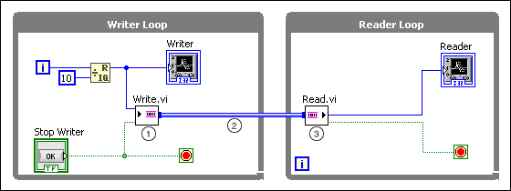

Transferring Data between Two Loops Running in Parallel
Using a channel wire is similar to using a refnum or a variable that one loop writes into and the other loop reads from. Instead of using a refnum or a variable, you represent data transfer graphically as a wire. Channel wires are asynchronous wires that connect two parallel sections of code without forcing an execution order. Thus, they avoid creating a data dependency between the two sections of code.
The following illustration demonstrates transferring data between two loops running in parallel using channel wires. Within Writer Loop, the Write endpoint continuously writes the value of the iteration terminal to the channel. Within Reader Loop, the Read endpoint continuously reads data from the channel. The Reader Loop does not need to wait for the Writer Loop to complete before the Reader Loop starts running. Instead, the two loops run in parallel. When the user clicks the Stop Writer button in Writer Loop, the Write endpoint stops writing data to the channel immediately, and the Read endpoint stops reading after it reads all the remaining data in the channel.

The following list describes important details about the previous diagram:
In the Writer Loop, create a writer endpoint by right-clicking a control or a constant and selecting Create�Channel Writer from the shortcut menu. This example uses the Stream template to create a Write endpoint. You also can choose from other writer endpoints of other channel templates.
Tip��To replace an existing endpoint on the block diagram with another, right-click the endpoint and select Replace�Channel Endpoint.
Draw a channel wire by connecting the channel output of the writer endpoint to the border of Reader Loop.
In the Reader Loop, create a reader endpoint by right-clicking a channel and selecting Create�Channel Reader from the shortcut menu.
Note��If you see a coercion dot or if the wire is broken because of different data types in the channel, right-click the endpoint or front panel terminal and select Adapt To Element Type or Adapt To Channel Type from the shortcut menu to resolve data type issues.
Caveats and Recommendations
The following list describes some of the caveats and recommendations to consider when you debug channel wires:
When probing a channel wire, the Probe Watch Window only serves as a flag that you want to probe that channel. A separate window for channel probes appears when the VI starts running. You can view the ongoing state of the channel in the channel probe window as different endpoints read or write data.
Selecting the Pause channel when wire probe activates for a new channel option in the Probe Watch Window causes the channel probe to pause as soon as the channel probe window opens. If you select the option early during the execution of your overall program, you can pause the channel itself before any endpoint executes. Pausing the channel itself allows you to watch closely what is happening in your channel.
The channel probe window provides debugging capabilities such as pausing, conditional pausing, and single-stepping. The debugging options are customized for each channel template, allowing for fine-grain debugging of channels.
Debugging capabilities are not available for High Speed Stream channels. You cannot probe the High Speed Stream channel even when debugging is turned on in a caller VI. Such settings ensure that you can transfer data in a fast and highly efficient manner using High Speed Stream channels. This should not deter you from using the other template channels because debugging has marginal impact on the performance of channels and the vast majority of caller VIs.